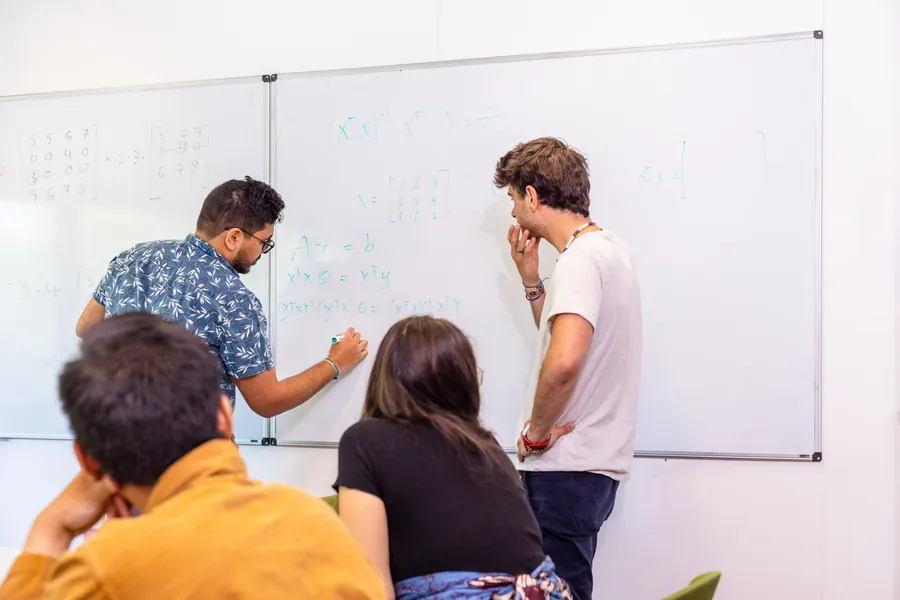
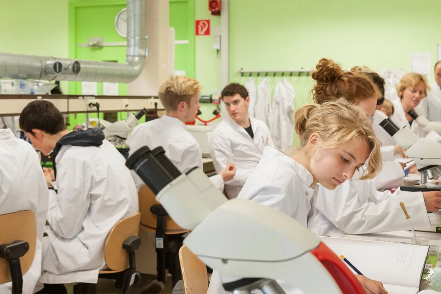
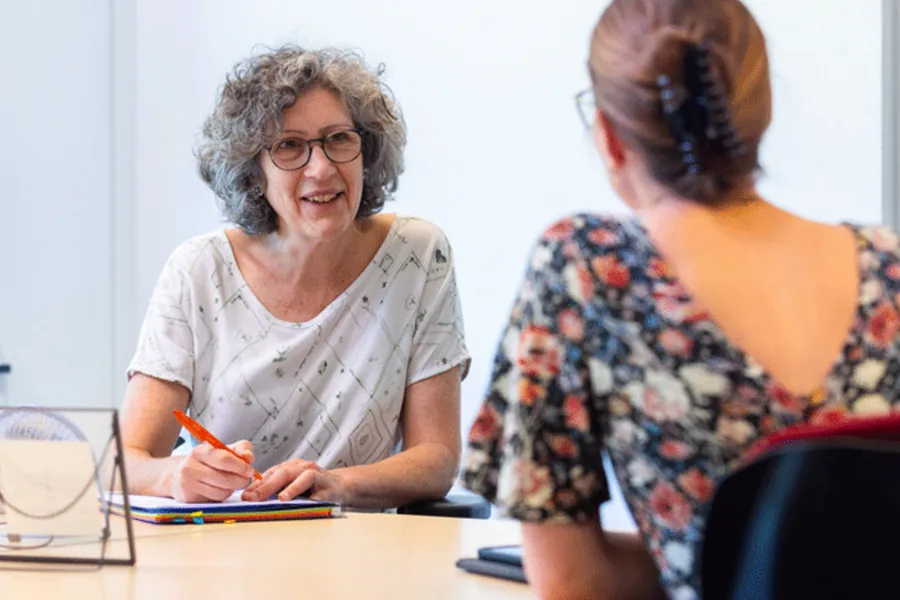

The courses at MSP
Everyone starts here. Then you choose where to go.
At MSP you build your own degree. You start with the core, then pick from over 140 courses and lab skills across eight worlds of science. Tap a crest to look inside, and star the courses you like.
Tap a crest to open its world.
1000Introductory. Where you start a new field.
2000Intermediate. May build on an introductory course.
3000Advanced. Builds on one or more earlier courses.
Try it out
What would your week look like?
Pick a period, two courses and a lab skill, and see your week. This uses the real 2026–27 timetable: your year will look much the same, though the details change each year.
Start with
Problem-Based Learning
How you'll learn


